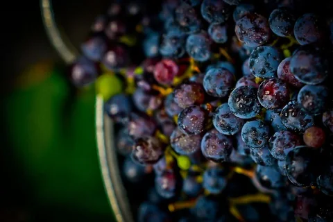

Accueil › Notre actualité › Mon Chai à Vinitech-Sifel 2026
Retrouvons-nous à Vinitech-Sifel 2026, à Bordeaux
Mon Chai sera présent à Vinitech-Sifel, du 1er au 3 décembre 2026 au Parc des Expositions de Bordeaux. Nous vous proposons de profiter de votre visite pour rencontrer l’équipe, parler de l’organisation de votre domaine et découvrir le logiciel en démonstration.

Votre rendez-vous
- Quand : les 1er, 2 et 3 décembre 2026.
- Où : au Parc des Expositions de Bordeaux, dans le cadre de Vinitech-Sifel.
- Avec Mon Chai : un échange sur vos besoins, suivi d’une démonstration adaptée à vos questions.
Vinitech-Sifel, un lieu de rencontre pour la filière
Organisé à Bordeaux par Bordeaux Events And More, Vinitech-Sifel est un salon professionnel consacré aux filières vitivinicole, arboricole et maraîchère. Il rassemble des acteurs de la production, des équipements, de la transformation et de la mise en marché, avec des conférences, des présentations et des rencontres professionnelles.
Ce rassemblement permet de comparer des approches, d’échanger avec les équipes qui développent les solutions et de poser des questions liées à sa propre exploitation. Le programme et les informations de visite sont disponibles sur le site officiel du salon.
Parlons d’abord de votre façon de travailler
Quels outils utilisez-vous aujourd’hui ? Quelles informations souhaitez-vous retrouver plus facilement ? Comment passent-elles de la vigne au chai, puis aux stocks et aux ventes ? Ces questions seront le point de départ de notre rencontre.
Vous pouvez venir avec un exemple concret : suivre un lot, préparer une opération de cave, retrouver l’historique d’un client ou comprendre comment commencer avec vos données. Si Mon Chai paraît adapté à votre besoin, nous vous présenterons le parcours correspondant dans le logiciel.
Une démonstration pour voir et poser vos questions
Nous pourrons découvrir ensemble les fonctions qui vous intéressent : parcelles et vendanges, cave et vinification, stocks, clients et ventes, ou saisies mobiles avec Mon Chai Notes. L’objectif est que vous puissiez apprécier la prise en main et la place de l’outil dans votre organisation.
Nous répondrons aussi à vos questions sur l’accompagnement, la reprise de données et les tarifs. Notre démarche est commerciale, mais la rencontre commence par la compréhension de votre activité et de vos attentes.
Réservez votre créneau et recevez votre invitation
Un agenda dédié permet de choisir votre démonstration pendant le salon. Réservez votre créneau avec Mon Chai et recevez votre invitation à Vinitech-Sifel. L’invitation est liée à la réservation de cette démonstration.
Prenons rendez-vous à Vinitech-Sifel
Choisissez un créneau pour échanger avec notre équipe et découvrir Mon Chai à Bordeaux.